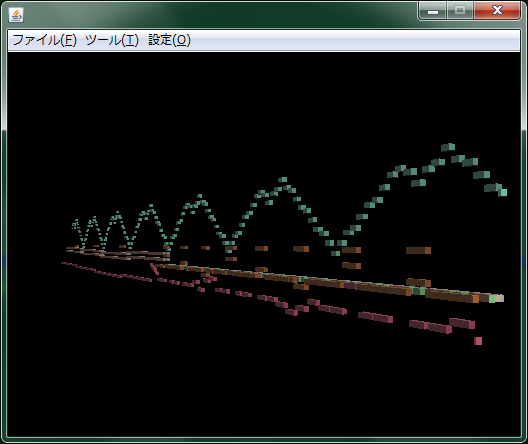
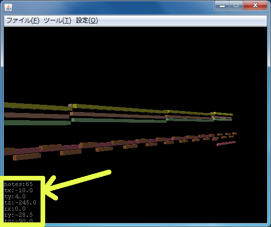
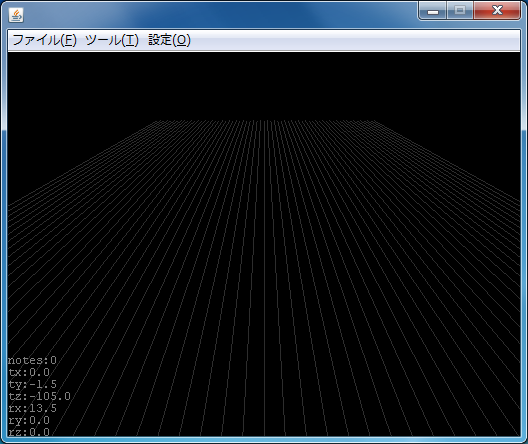

3D ピアノロールレンダラー - version 0.1.x
Author
rz
Web

目次
概要
プレーヤー同梱のレンダラーです。
3D によるピアノロールレンダリングを行います。
マウス操作などでピアノロール表示位置の変更や、表示位置のセーブ・ロードが可能です。
ピアノロールは各 MIDI チャンネル毎に表示位置（高さ）を変えています。
ch1(低め)→→→ch(高め)
これにより、ch間のユニゾンなど同じノートナンバー発音でも角度を変えればそれらを見ることが可能です。
動作環境
現状、若干 CPU 処理能力に依存している部分があり、
デュアルコア以上のCPU を推奨します。
シングルコアの CPU はあまり推奨しません。
（特に、MIDIアニメ・連弾系など大量のMIDIノートを出力するデータを再生する場合はよりマシンパワーを要求されます・・・）
作者は下記環境で動作確認を行っております。
OS : Windows7 (x64)
CPU : Intel Core2 Quad Q9450 2.66Ghz
VGA : NVIDIA GeForce 8400 GS
ピアノロール全体の表示位置、回転など表示に関する操作
移動
方
向(軸)
|
マ
ウス操作での移動
|
キー
ボード操作での移動
|
左右(X)
|
マウス右ボタンを押したまま左右方向にドラッグ
|
↑↓
|
上下(Y)
|
マウス右ボタンを押したまま上下方向にドラッグ |
←→
|
前後(Z)
|
マウスホール回転
|
|
回転
方
向(軸)
|
マ
ウス操作での移動
|
キー
ボード操作での移動
|
左右(Y)
|
Ctrl キー + マウス左ボタンを押したまま左右方向にドラッグ
|
Ctrl キー +↑↓
|
上下(X)
|
Shift キー + マウス左ボタンを押したまま上下方向にドラッグ |
Shift キー +↑↓ |
前後(Z)
|
Alt キー + マウス左ボタンを押したまま左右方向にドラッグ |
Alt キー +↑↓ |
位置情報のセーブ、ロード
表示位置の情報を保存、読み込みが可能です。これは、このレンダラーを終了するか、アプリケーション本体を終了する時、ファイルに保存されます。
保存可能な数は８個です。デフォルトで各種パターンが登録されています。
ロード
キーボードの「１」〜「８」
セーブ
Shiftキー
+ キーボードの「１」〜「８」
位置情報のリセット
ピアノロール位置を見失ってしまい、移動・回転が思うように行えなくなった場合はキーボードの「D」キーを押してください。
デフォルト位置に戻します。
位置情報などの表示
キーボードの「C」キーで表示切替が可能です。デフォルトでは表示は OFF です。
ピアノロール表示位置の微調整などにお使いください。
ON の時、左下にテキストが表示されます。

notes
|
レンダリング中の MIDI ノート数。現状 1024
個を上限にしています。
ノートイベントの勢いがそれを上回る場合、一番最後にレンダリングを開始したノートを消し、ノートのレンダリング用のポリゴンに再割り当てを行います。
|
tx
|
X位置（座標系としては、いわゆる視点座標系と呼ばれる物となります）
|
ty
|
Y位置（座標系としては、いわゆる視点座標系と呼ばれる物となります） |
tz
|
Z位置（座標系としては、いわゆる視点座標系と呼ばれる物となります） |
rx
|
X軸回転（単位は度です）
|
ry
|
Y軸回転（単位は度です） |
rz
|
Z軸回転（単位は度です） |
グリッド表示
キーボードの「G」キーで表示切替が可能です。デフォルトでは表示は OFF です。
ピアノロール表示位置の微調整などにお使いください。
ON の時、グリッド線が表示されます。

その他細かい設定を行う場合
以下の場所に設定ファイルを置いていますので、テキストエディタで編集することで変更可能です。
<MIDIPlayerの場所>/data/plugin/renderer/3DPianoroll/
config.xml
※編集の際は一度アプリケーション本体を終了してください。
ピアノロールの色
<color midich = "?" color = "#??????" />
midich: 対象となる MIDI ch (0〜15)
color: 色。 html 同様に #RRGGBB 形式が使用できます。
レンダリング時のフレームレート
<renderer fps = "***" ....>
***の箇所を変更することで変更が可能です。
もし、重い場合はこの値を減らしてみてください。
デフォルトは 60 です。
有効範囲は 1〜32767 です。
設定ファイルを誤って消してしまった/直接編集したら動かなくなった場合
以下のファイルを config.xml として別名コピーをしてください。
<MIDIPlayerの場所>/data/plugin/renderer/3DPianoroll/
config.xml.default
履歴